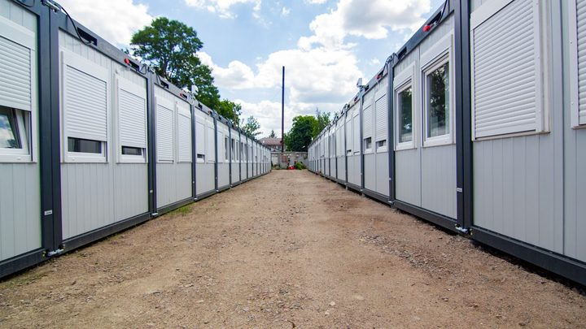

Itapema · Poder Público
Itapema · Poder PúblicoOs banheiros novos da orla de Itapema são alugados, e a ata do pregão soma R$ 2,99 milhões
Outro caso em que a cidade aluga em vez de comprar, e a conta só aparece no documento.
O extrato do contrato nº 155/2026 saiu no Diário Oficial dos Municípios nesta terça-feira, 15 de setembro, assinado no mesmo dia. São R$ 228.690,00 por 18 meses, o que dá R$ 12.705,00 por mês, para instalar de forma provisória as atividades administrativas do Corpo de Bombeiros Militar de Santa Catarina em Itapema enquanto houver obra na sede. O documento não diz que obra é essa, nem quando começa. Fomos atrás dos outros contratos de locação de imóvel que a Prefeitura publicou em 2026: achamos mais três, os quatro somam R$ 592.899,60, e este é o mais caro por metro quadrado.
Em 30 segundos · Modo de Leitura, formato original Santa Informa
A Prefeitura de Itapema alugou um imóvel.
Fica na Rua 248, nº 741, na Meia Praia.
Tem 253 metros quadrados construídos.
É para a administração do Corpo de Bombeiros.
De forma provisória.
Enquanto houver obra na sede.
O valor é R$ 228.690,00.
A vigência é de 18 meses.
Dá R$ 12.705,00 por mês.
E R$ 50,22 por metro quadrado.
O contrato é o nº 155/2026.
Assinado em 15 de setembro de 2026.
Antes veio uma inexigibilidade.
A de nº 06.047.2026.
Homologada em 8 de setembro.
Base legal: artigo 74, inciso V.
Da Lei 14.133/2021.
O papel não diz que obra é essa.
Nem quando começa ou quanto custa.
A Prefeitura não anunciou nada.
Fomos ver os outros aluguéis do ano.
São quatro contratos em 2026.
Somam R$ 592.899,60.
E R$ 43.055,80 por mês.
Este é o mais caro por metro quadrado.
Os dois galpões saem por cerca de R$ 24.
Poder PúblicoPublicada em Redação Santa Informa
A Prefeitura de Itapema publicou no Diário Oficial dos Municípios, nesta terça-feira, 15 de setembro, o extrato do contrato nº 155/2026. Ele aluga o imóvel da Rua 248, nº 741, na Meia Praia, com 253 metros quadrados de área construída, para a instalação provisória das atividades administrativas do Corpo de Bombeiros Militar de Santa Catarina em Itapema. O valor global é de R$ 228.690,00 e a vigência é de 18 meses, contados da última assinatura. O contrato foi assinado no mesmo dia em que saiu. Dividindo o valor pelo prazo, o aluguel fica em R$ 12.705,00 por mês.
O extrato dá a razão da mudança e para por aí: a locação serve para garantir "continuidade dos serviços institucionais durante o período de intervenção na sede". É tudo o que o papel diz sobre a obra. Não há no texto o que é essa intervenção, quando começa, quanto dura nem quem paga a conta. Procuramos no site da Prefeitura e não achamos aviso nenhum sobre obra no quartel: a notícia mais recente sobre os bombeiros da cidade é de 20 de agosto, do curso de guarda-vidas voluntário.
Antes do contrato veio a inexigibilidade de licitação nº 06.047.2026, processo 128/2026, homologada em 8 de setembro pelo prefeito Carlos Alexandre de Souza Ribeiro. Ela se apoia no artigo 74, inciso V, da Lei 14.133/2021, que é o trecho da lei de licitações que permite alugar imóvel sem disputa quando as características de instalação e de localização tornam necessária a escolha. Os locadores são Maria Bernardete Trainotti Orsi e Edson Orsi. O contrato pode ser prorrogado na forma do artigo 105 da mesma lei.
Fomos ao Diário Oficial procurar os outros contratos de locação de imóvel assinados pela Prefeitura neste ano, e achamos três. Em 3 de junho, o contrato 091/2026 pegou um galpão de 316 m² no Jardim Praia Mar para bens inservíveis que vão a leilão, por R$ 91.089,60 em 12 meses. Em 1º de julho, o 115/2026 pegou outro galpão de 316 m² no mesmo bairro, para material de eventos e ensaios culturais, por R$ 90.720,00 em 12 meses. Em 4 de setembro, o 148/2026, do Fundo Municipal de Assistência Social, pegou um imóvel de 350,93 m² na Meia Praia para o acolhimento de crianças e adolescentes, a R$ 15.200,00 mensais. Com o dos bombeiros, os quatro somam R$ 592.899,60 e pesam R$ 43.055,80 por mês.
Dividindo o aluguel mensal pela área de cada imóvel, o dos bombeiros sai por R$ 50,22 o metro quadrado. O do acolhimento fica em R$ 43,31. Os dois galpões do Jardim Praia Mar saem por R$ 24,02 e R$ 23,92, menos da metade. A diferença tem explicação possível, porque galpão de estoque não se compara com sala de escritório. O que não existe é a explicação publicada: nenhum extrato traz o laudo que fixou o preço.
O resumo de 30 segundos está no topo e a versão completa é o texto acima. Aqui ficam as três leituras da casa sobre o mesmo assunto.
Clara, a otimista
Obra em quartel costuma parar serviço, e essa não vai parar. A administração dos bombeiros ganhou endereço antes de a sede entrar em obra, com contrato assinado, prazo definido e tudo publicado. Quem precisa de vistoria, de laudo ou de atestado continua sendo atendido.
E tem o prazo. Dezoito meses é bem mais que os doze dos outros aluguéis da cidade. Isso indica que a obra não é retoque de pintura, é coisa de fôlego. Quartel reformado é bombeiro trabalhando melhor numa cidade que cresce rápido e enche de gente no verão.
Seu Prudêncio, o criterioso
Merece atenção o preço por metro quadrado. Este aluguel sai por R$ 50,22, contra R$ 43,31 do imóvel do acolhimento e cerca de R$ 24 dos dois galpões. A diferença pode estar toda certa, porque imóvel de escritório não é galpão de estoque, só que o documento publicado não mostra a conta.
Vale acompanhar também o que ainda não apareceu. O morador ficou sabendo do aluguel, mas não da obra que motivou o aluguel. Nem escopo, nem data de início, nem prazo, nem de quem é a despesa. A informação chegou pela metade, e foi a metade menos interessante.
Uma sugestão útil seria a Prefeitura publicar, junto de contratos de locação por inexigibilidade, o laudo de avaliação do valor e uma linha dizendo qual obra ou necessidade gerou a contratação. O dado já existe dentro do processo, é público, e não custa nada trazer para onde o morador lê.
Dito isso, é preciso reconhecer o que foi feito direito. A inexigibilidade foi homologada primeiro, em 8 de setembro, e só depois veio o contrato, em 15. Os dois saíram no Diário Oficial, com artigo de lei, valor, prazo e responsável. Contratar antes de a obra começar é planejamento, e um contrato de 18 meses evita a fila de renovações curtas que costuma sair mais cara no fim.
Caco, o sarcástico
O Corpo de Bombeiros de Itapema vai se mudar e ninguém contou. Descobrimos pelo aluguel, que é como a cidade costuma avisar as coisas: primeiro sai o extrato, depois a notícia, e a obra fica para quando der.
Também reparei que o aluguel mais caro por metro quadrado do ano é justamente o de quem apaga incêndio. Deve ser a localização. Ou o prédio ser bem seguro, vai saber.
Mas eu não vou reclamar. Bombeiro com sala nova e obra na sede é serviço que melhora. Tá saindo caro, mas é progresso.
Fontes: o valor de R$ 228.690,00, a vigência de 18 meses, o endereço da Rua 248, nº 741, na Meia Praia, os 253,00 m² de área construída, a finalidade de instalação provisória das atividades administrativas do Corpo de Bombeiros Militar de Santa Catarina, a frase sobre a intervenção na sede, os nomes dos locadores e a assinatura em 15 de setembro de 2026 estão no extrato do contrato nº 155/2026, publicado pela Prefeitura de Itapema no Diário Oficial dos Municípios de Santa Catarina em 15 de setembro de 2026. A inexigibilidade de licitação nº 06.047.2026, o processo 128/2026, o artigo 74, inciso V, da Lei 14.133/2021 e a homologação em 8 de setembro estão no extrato da inexigibilidade. Os outros aluguéis de 2026 estão nos extratos do contrato nº 091/2026, com o galpão nº 02 de 316 m² por R$ 91.089,60, do contrato nº 115/2026, com o galpão nº 11 de 316 m² por R$ 90.720,00, e do contrato nº 148/2026, com o imóvel de 350,93 m² a R$ 15.200,00 mensais, assinado pelo Fundo Municipal de Assistência Social. A busca por esses contratos foi feita por nós no Diário Oficial dos Municípios de Santa Catarina. O aluguel mensal de R$ 12.705,00, os valores por metro quadrado, a soma de R$ 592.899,60 e o total de R$ 43.055,80 por mês são contas nossas sobre esses documentos. A ausência de aviso sobre obra no quartel foi conferida por nós na página da Prefeitura de Itapema, cuja notícia mais recente sobre os bombeiros da cidade é a de 20 de agosto de 2026, sobre o curso de guarda-vidas civil voluntário. Nossa cobertura anterior de contratos da cidade que só aparecem inteiros no Diário Oficial está em Itapema fechou R$ 3,27 milhões para instalar containers e em Os banheiros novos da orla de Itapema são alugados.
Itapema · Poder PúblicoOutro caso em que a cidade aluga em vez de comprar, e a conta só aparece no documento.

Itapema · Poder PúblicoMais um contrato que só aparece inteiro quando se lê o Diário Oficial.
 Itapema · Poder Público
Itapema · Poder PúblicoO tamanho do caixa de onde saem contratos como este.